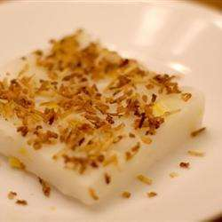

Delicious Dessert Recipe

Maja Blanca
Prepare time
10 mins
Cook time
30 mins
Total time
60 mins
SERVES: 10
Ingredients
1/2 cup water
1/2 cup cornstarch
1 cup coconut milk
3/4 cup water
1/2 cup white sugar
1/4 cup fresh sweet corn kernels
1/4 cup sweetened flaked coconut
Instructions:
Butter an 8-inch baking dish or pie pan, and set aside.
Mix 1/2 cup of water with the cornstarch in a bowl, and stir until smooth.
Combine the coconut milk, 3/4 cup of water, and sugar in a saucepan over low heat, and stir until the sugar is dissolved.
Bring the mixture to a boil, add the corn kernels, and then stir in the cornstarch mixture, stirring quickly to avoid lumps as it becomes very thick.
Bring the mixture back to a boil, and simmer until fully thickened and smooth, stirring constantly, about 2 minutes.
Pour the maja blanca into the prepared dish, and set aside to cool until firm, about 2 hours.
Place the coconut flakes in a dry skillet over medium heat, and stir to toast. Watch them carefully so they don't burn.
Remove the toasted coconut flakes to a bowl, let cool, and sprinkle over the pudding before serving.
Share and enjoy!